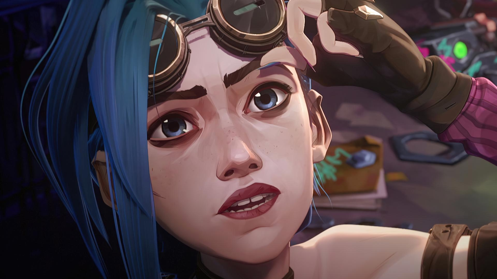
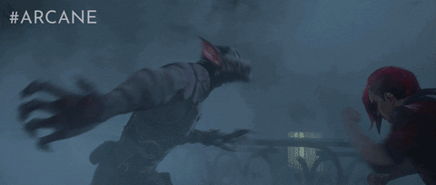

La serie de animación "Arcane" ha sido elogiada por su impresionante estilo visual y técnicas innovadoras. A continuación, exploramos las técnicas y procesos clave utilizados en su creación:
Técnicas de Animación
Arcane combina técnicas de animación tradicionales y modernas para crear un estilo visual único que destaca por su detalle y dinamismo. Aquí hay algunas de las técnicas utilizadas:
- Animación 2D y 3D: La combinación de animación en 2D y 3D permite crear personajes y escenarios que se sienten vivos y tridimensionales.
- Texturización Pintada a Mano: Los artistas de Arcane utilizaron texturas pintadas a mano para dar un aspecto único y detallado a los personajes y entornos.
- Efectos Visuales (VFX): Los efectos visuales se utilizaron para mejorar las escenas de acción y añadir elementos mágicos y tecnológicos que enriquecen la narrativa.
Proceso de Producción
El proceso de producción de Arcane es complejo y colaborativo, involucrando a múltiples equipos de animadores, artistas y técnicos. A continuación, se describe brevemente el flujo de trabajo:
- Concepto y Guión: La fase inicial de cualquier producción comienza con la creación de la historia y el guión.
- Diseño de Personajes y Entornos: Los artistas crean diseños detallados de los personajes y los entornos basados en el guión.
- Animación y Renderizado: Los animadores dan vida a los personajes y escenarios, utilizando software avanzado para animar y renderizar las escenas.
- Postproducción: En esta fase, se añaden efectos visuales, se ajusta la iluminación y se finalizan los detalles para completar el episodio.
Herramientas Utilizadas
Para lograr el impresionante estilo visual de Arcane, se utilizaron varias herramientas de software de animación y edición. Algunas de las herramientas clave incluyen:
- Adobe After Effects: Utilizado para la creación de efectos visuales y la composición.
- Autodesk Maya: Una herramienta principal para la animación 3D y el modelado.
- Photoshop: Usado para la creación de texturas y arte conceptual.
Animación 2D sobre Modelos 3D:
Fortiche se destacó en la integración de efectos 2D hechos a mano, como nubes de polvo, explosiones y rayos de luz en sus producciones anteriores, y perfeccionaron esta técnica para "Arcane". En el video musical "Get Jinxed", Fortiche utilizó estos efectos en lugar de los efectos 3D tradicionales, dando un toque único y caricaturesco.

Efectos Visuales Humanizados:
El director de animación Barthelemy Maunoury se enfocó en mantener efectos humanos en la serie, asegurando que el mundo siempre tuviera sentido para los artistas. Esto incluía detalles como rayones o manchas en el lente durante explosiones y capturas de acciones inusuales, dando una sensación más humana y artesanal a la animación.Exploración del Estado Mental de los Personajes:
Para transmitir el estado mental maníaco de Jinx, se utilizaron efectos visuales como fallos y rayones en la película, que luego se escanearon en la computadora. Esto le dio un estilo visual único a la expresión mental del personaje.Movimiento Dinámico de Cámara:
El episodio seis, "When These Walls Come Tumbling Down", presentó movimientos de cámara más dinámicos que cualquier otro episodio. Se estudiaron deportes como el snowboard y el surf para inspirar los movimientos fluidos y aéreos de los personajes durante las escenas de lucha, especialmente con los Firelights usando tablas voladoras.
